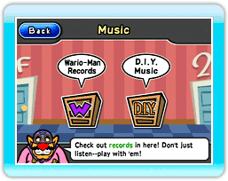
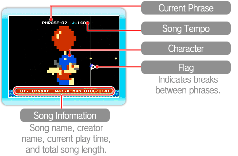
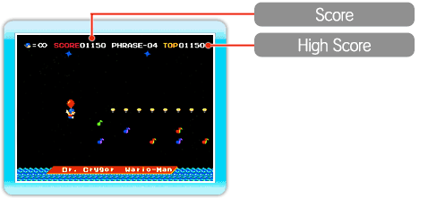

You can listen to records in the Music section of the Wario-Man Super Store.

● Music Menu
Point at either of the two menu options and press  .
.
·Wario-Man Records
Records preloaded in WarioWare: D.I.Y. Showcase are available here to listen to or to play as a game. Select a record, then select .
·D.I.Y. Music
This is where records received in the Distribution Center are stocked. You can play them the same way you play records from Wario-Man Records. Note that you can point at records and press +  to grab them and move them to different shelves or to different locations in the same shelf. You can store up to 72 records in D.I.Y. Music. To delete a record, select it, then select
to grab them and move them to different shelves or to different locations in the same shelf. You can store up to 72 records in D.I.Y. Music. To delete a record, select it, then select  .
.
*You cannot recover records that have been deleted.
● How to Play Records
When you've selected a record, choose whether you'd like to listen to the record or play it like a game by selecting either or .
·Listen
In this mode, the record is played back automatically.
You can point at the character on-screen and press to grab him. Move the character to the left to slow the song tempo and to the right to speed it up.
*The character automatically moves to the right. You can't reverse his direction.

·Play
Control the character on-screen and touch the musical notes and rhythm marks to play the corresponding sounds and increase your score.
*Try not to hit stars, be eaten by fish, or fall into the water. You will have to wait a short time before being returned to play.

Controls
 Left/Right Left/Right |
Move |
|
 |
Rapid Climb |
| Down |
Rapid Drop |
|
 |
Climb |
 |
 |
 |
 |
Music Used
| Composer |
Song |
| Johann Strauss Sr. |
Radetzky March |
| Alexander Borodin |
Polovtsian Dances |
| E. Humperdinck |
Hansel and Gretel |
| Richard Wagner |
The Mastersingers of Nuremberg |
| Felix Mendelssohn |
A Midsummer Night's Dream |
| American folk song |
Oklahoma Mixer |
|
 |
 |
 |
 |